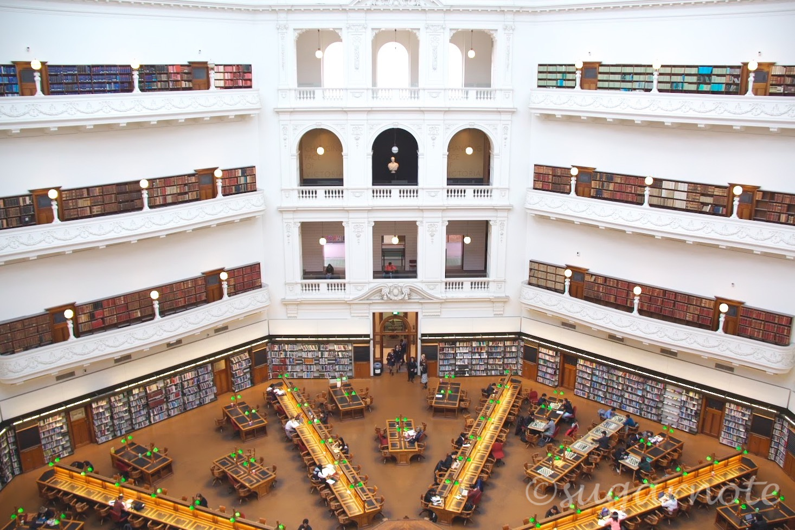
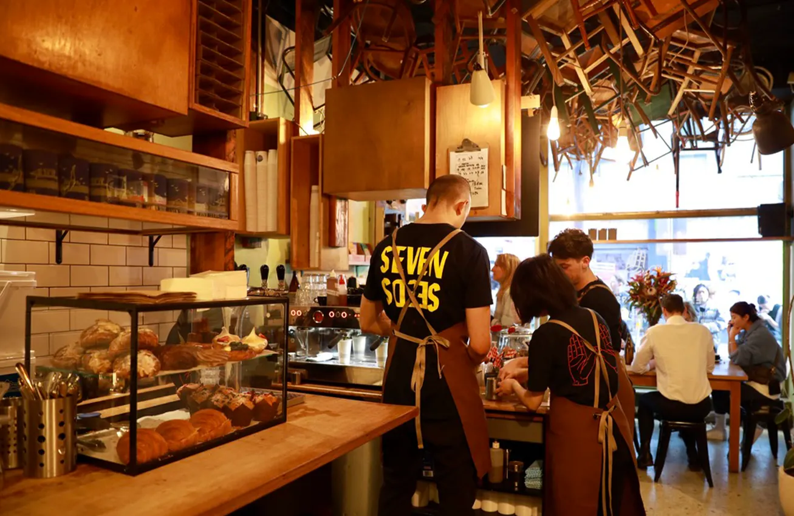
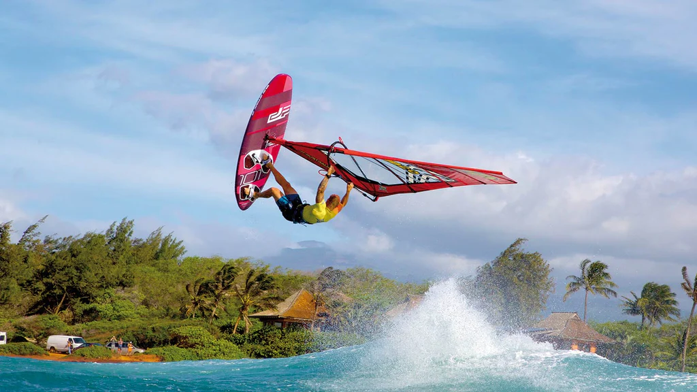
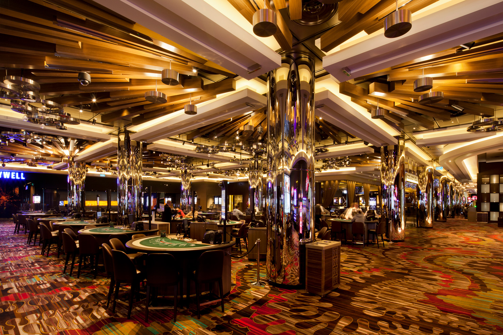

メルボルン
メルボルンについて

メルボルンはオーストラリアの南部にあるシドニーの次に栄えてる街です。
夏の気温は40℃、冬は雪こそ降りませんが0℃近くまで下がるので、振れ幅が大きい印象でした。
夏は毎日とても暑いので、半袖と半ズボンでよく海に行っていました。 海では野生のペンギンを見ることができます。
冬はブラックフライデーやボクシングデーになると多くの店が大幅なディスカウントを行うので、日本とは違った盛り上がりを見せます。
コーヒーの街メルボルン

メルボルンはコーヒーがすごく有名な街です。
特にオーストラリアというと日本にはあまり馴染みのない"フラットホワイト"というものが有名でした。
普通のラテより泡のフォームが軽く、とても飲みやすい印象でした。
ウィンドサーフィンやカジノ
ウィンドサーフィン
メルボルンのCVDから近いビーチです！
こちらは時期によっては野生のペンギンにも会うことができます。
日本では見たことのないウィンドサーフィンでとても賑わっていました！
カジノ
こちらはメルボルンのCVDにあるクラウンカジノです。
カジノで遊べるゲームは主にこんな感じです。
- ブラックジャック
- スロット
- ルーレット
- ポーカー
カジノはもちろん楽しかったのですが、それよりもカジノ内のブッフェの方が個人的にはよかったです。